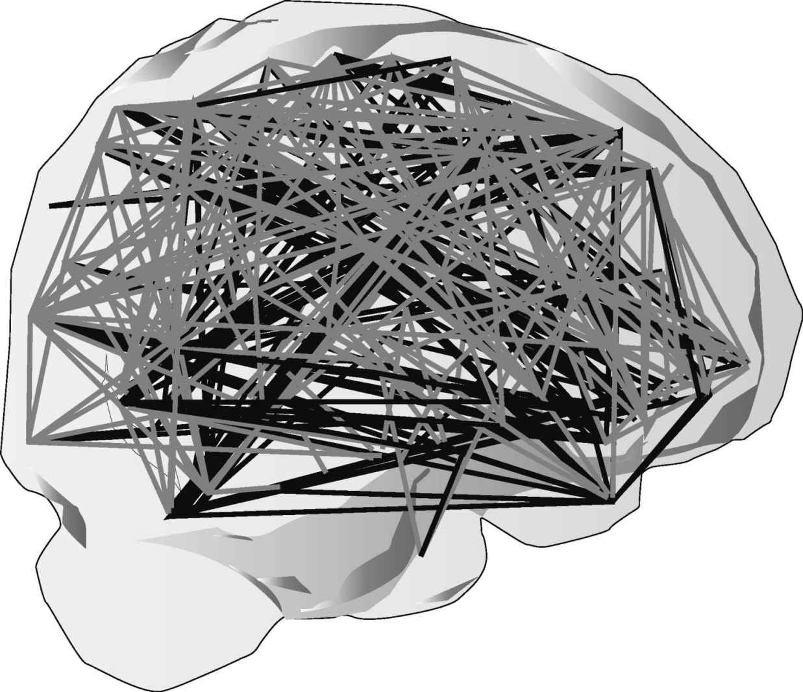
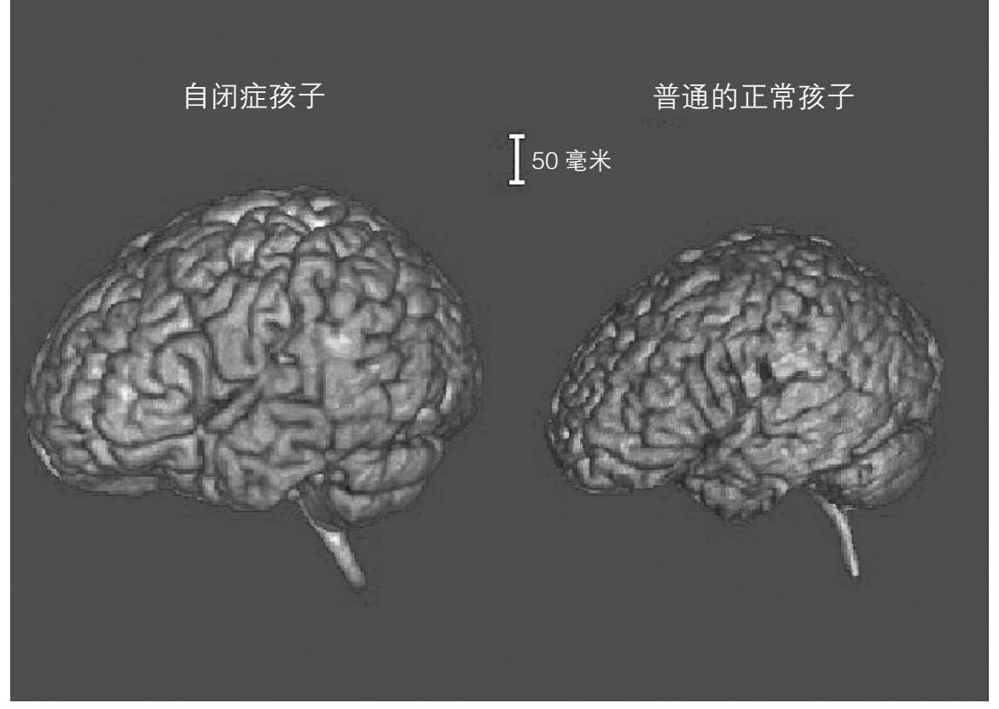

直至最近，才有人提出自闭症孩子的头可能大于其他孩子的。利奥·坎纳曾经注意到这点，但他的观察一直以来被忽略了。实际上，自闭症孩子出生时的头围和其他孩子并无不同。头围差异到后来，即一岁之后才显现。然后随年龄增长，到现在为止的测量表明头围可能再次变小。这意味着什么？

图7 大脑不同区域有大量的联结。有可能在自闭症大脑中，联结不太好。可能是联结更少，也可能是联结错误
头围，大概还有大脑容量，并不固定。人一生之中头围会变化。有研究表明，在孩提时代早期，自闭症的大脑容量增加明显快于正常发育的孩子。在这个阶段，他们的差别相当明显。然而，正常发育的孩子头围也会增长，并最终追赶上自闭症孩子的头围。
从这点来说，我们仍须假以时日，追踪研究不同个体，才能完成确切的研究。但我们可以假设，年幼的大脑在发育过程中也有交替的增减。可能在自闭症中增多于减，起码在孩提时代早期是如此。大脑容量暴增的背后究竟是什么原因呢？
修剪发育中大脑的过度增长
黛安娜想到了她家的花园，灌木丛繁殖迅速，必须时常修剪，以免互相缠绕、堵住。可以理解的是，大脑同样也可能有过度发育和修剪阶段。假如神经细胞数量在出生时已基本确定，那就可以推断出神经细胞的联结会被修剪。这些联结就像植物，特别是植物的根部一样，有很多枝杈（称作树突）伸展开去，以联结其他神经细胞的枝杈。在这些枝杈的接触点，存在着最为错综复杂的机制，称作突触。它们就是缩微工厂，控制着什么进，什么出。这已在神经生物学家的实验室中被研究过了，他们可以在显微镜下观察几个脑细胞。这些细胞大多来自鼠类，但它们和人类脑细胞工作机制一样。
像黛安娜一样的优秀园丁需要不时修剪她家花园里的灌木丛、篱笆和树。对大脑来说，园丁的作用部分由控制着过程的基因承担，部分通过学习实现。通过学习，能把必要的联结从不必要的联结中甄别出来。我们可以想象，在自闭症大脑中，其中一个或是两个“园丁”都玩忽职守了。可能存在着过多的联结，导致了联结错误。

图8 一些自闭症孩子大脑袋的例子。很多自闭症孩子出生时头围小，但在一岁之后会表现出头围的过快增长。从孩提时代后期开始头围缩小的情形也有报道
遗憾的是，尚没有直接证据能解释清楚究竟发生了什么。我们也还需要关于大脑正常发育的更多知识。还有很多工作要做。